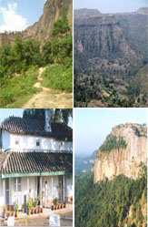
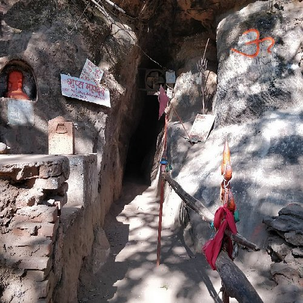
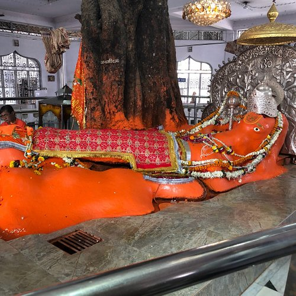
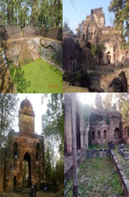
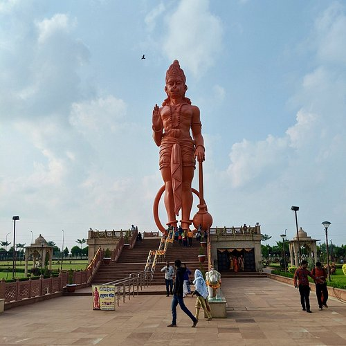
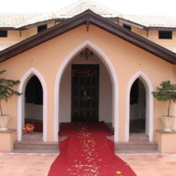
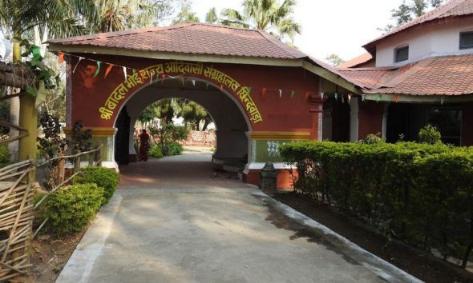
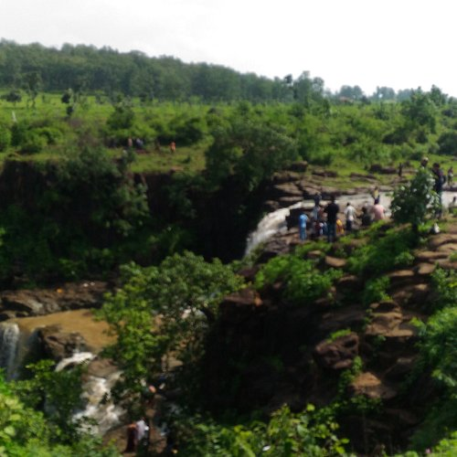
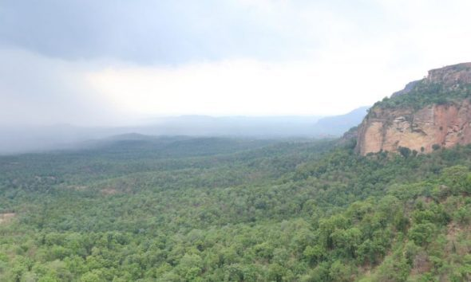
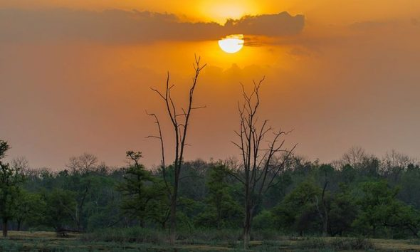

A naturally beautiful valley surrounded by greenery, perfect for photography.
 VisitAn excellent spot to relax and chill, known for its beauty and peaceful ambiance.
 VisitA temple dedicated to Lord Hanuman, worth visiting if you’re in Chhindwara or Nagpur.
 VisitOnce the capital of the Gondwana Dynasty, it offers beautiful views of the surrounding nature.
 VisitSet in a well-maintained lawn with temples of various deities.
 VisitA historic site.
 VisitShowcasing the lifestyle and culture of tribal communities..
 VisitMust-visit during the rainy season.
 VisitOffers scenic views.
 VisitA unique natural feature.
 VisitHappy Journey!